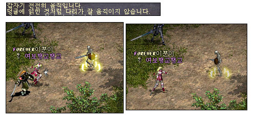

2003年1月14日 傲慢塔九樓太容易？來源：Jude1004.com
英文翻譯：Lineage Compendium Jude1004.com發表了一篇文章提及傲慢塔九樓是很容易的。 妖精配合魂體轉換可以在那裡清場，因為大部分怪物都是非常慢的。夢魔不會變身玩家，因此只有骨龍及小惡魔是較強的怪物。小惡魔的近身攻擊不太強，而遠距離攻擊範圍只有四格，因此妖精可以保持五格的距離慢慢拉畫面打。由於那裡全部都是高等級的怪物，因此妖精們在那配合魂體轉換就可以打到無盡的經驗值，幾乎不用回家呢！ 傲慢塔九樓怪物的掉下物：魔寶，4級魔法卷，5級魔法卷，骰匕，小靈魂，小精神皮帶，武士刀，金屬盔甲，祝福的金屬盔甲，抗鏈，鱗甲，雙手劍，祝雙，綠水，高綠，創杖，勇水，復卷，藍水，慎水，迷魅，體魄，4-6級魔法書，抗魔戒指(10%)，白防，祝防，白武，祝武，惡魔套裝。 而骨龍則會掉藥水及寶石，包括高品鑽，另外還會掉祝福和普通的防武卷呢！
多羅皮帶 根據Lineage Compendium的數據，多羅皮帶應該會增加載重上限20%，即是說假如原先的載重上限為2700的話，在戴上多羅皮帶後載重上限會提升至2700 * 1.2 = 3240。（歐吉皮帶則為40%，那麼泰坦皮帶會否增加50%-60%的載重上限呢？）
妖精魔法 - 地之束縛 來源：Lineage Playforum
英文翻譯：  妖精地系三級魔法地之束縛出現在韓國測試伺服器上，它的用途與緩速術差不多，但不會減慢太大的速度。消費為20MP及1精靈玉，此魔法是由牛人族掉下。
美國測試伺服器1月13日更新內容 原文：美國天堂官方網站公告 加入了各職業的30級新任務。 |